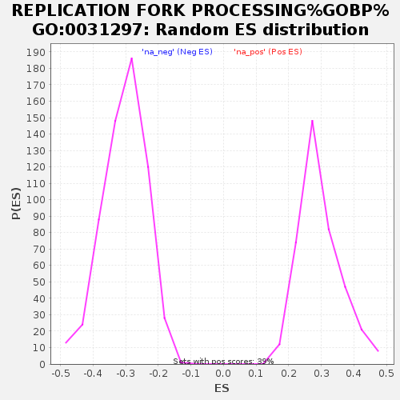

| | | Dataset | GSEA_GSE185657 |
| Phenotype | NoPhenotypeAvailable |
| Upregulated in class | na_pos |
| GeneSet | REPLICATION FORK PROCESSING%GOBP%GO:0031297 |
| Enrichment Score (ES) | 0.5743749 |
| Normalized Enrichment Score (NES) | 1.9624187 |
| Nominal p-value | 0.0 |
| FDR q-value | 0.029611425 |
| FWER p-Value | 0.445 |
Table: GSEA Results Summary
 Fig 1: Enrichment plot: REPLICATION FORK PROCESSING%GOBP%GO:0031297
Fig 1: Enrichment plot: REPLICATION FORK PROCESSING%GOBP%GO:0031297
Profile of the Running ES Score & Positions of GeneSet Members on the Rank Ordered List
| SYMBOL | RANK IN GENE LIST | RANK METRIC SCORE | RUNNING ES | CORE ENRICHMENT | | 1 | NBN | 18 | 2.575 | 0.1008 | Yes |
| 2 | ATR | 107 | 1.684 | 0.1612 | Yes |
| 3 | RAD50 | 117 | 1.633 | 0.2253 | Yes |
| 4 | RFWD3 | 319 | 1.297 | 0.2620 | Yes |
| 5 | SAMHD1 | 472 | 1.129 | 0.2957 | Yes |
| 6 | SMARCAL1 | 507 | 1.101 | 0.3369 | Yes |
| 7 | RAD51 | 838 | 0.914 | 0.3489 | Yes |
| 8 | TONSL | 1158 | 0.787 | 0.3567 | Yes |
| 9 | FANCM | 1412 | 0.700 | 0.3659 | Yes |
| 10 | THOC1 | 1443 | 0.692 | 0.3912 | Yes |
| 11 | MRE11 | 1542 | 0.662 | 0.4103 | Yes |
| 12 | CENPX | 1607 | 0.643 | 0.4311 | Yes |
| 13 | BRCA1 | 1822 | 0.595 | 0.4390 | Yes |
| 14 | ALYREF | 1831 | 0.593 | 0.4620 | Yes |
| 15 | BRCA2 | 1897 | 0.575 | 0.4800 | Yes |
| 16 | BARD1 | 1948 | 0.563 | 0.4987 | Yes |
| 17 | BOD1L1 | 2034 | 0.547 | 0.5142 | Yes |
| 18 | GEN1 | 2113 | 0.529 | 0.5294 | Yes |
| 19 | CENPS | 2177 | 0.514 | 0.5452 | Yes |
| 20 | ETAA1 | 2184 | 0.513 | 0.5651 | Yes |
| 21 | NUCKS1 | 2319 | 0.482 | 0.5744 | Yes |
| 22 | FAM111A | 2755 | 0.412 | 0.5588 | No |
| 23 | OOEP | 3065 | 0.364 | 0.5506 | No |
| 24 | MMS22L | 3242 | 0.340 | 0.5512 | No |
| 25 | EME2 | 3464 | 0.310 | 0.5473 | No |
| 26 | TRAIP | 3634 | 0.287 | 0.5463 | No |
| 27 | SETMAR | 4755 | 0.161 | 0.4705 | No |
| 28 | BLM | 4881 | 0.148 | 0.4672 | No |
| 29 | PRIMPOL | 5681 | 0.075 | 0.4115 | No |
| 30 | EME1 | 5915 | 0.059 | 0.3968 | No |
| 31 | ATRX | 6198 | 0.037 | 0.3776 | No |
| 32 | MUS81 | 7612 | -0.069 | 0.2767 | No |
| 33 | PCNA | 8021 | -0.103 | 0.2508 | No |
| 34 | DNA2 | 8116 | -0.111 | 0.2483 | No |
| 35 | ZGRF1 | 8261 | -0.124 | 0.2427 | No |
| 36 | CDK9 | 9094 | -0.207 | 0.1899 | No |
| 37 | RBBP8 | 9496 | -0.251 | 0.1704 | No |
| 38 | DDX11 | 9701 | -0.278 | 0.1665 | No |
| 39 | ZRANB3 | 9852 | -0.301 | 0.1674 | No |
| 40 | WRN | 11597 | -0.589 | 0.0628 | No |
| 41 | RTEL1 | 12017 | -0.692 | 0.0595 | No |
| 42 | EXD2 | 12180 | -0.741 | 0.0770 | No |
| 43 | FBH1 | 12397 | -0.817 | 0.0936 | No |
Table: GSEA details [plain text format]

Fig 2: REPLICATION FORK PROCESSING%GOBP%GO:0031297: Random ES distribution
Gene set null distribution of ES for REPLICATION FORK PROCESSING%GOBP%GO:0031297